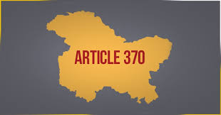

Goto top Government Web-Site Link
Latest Information Government Exam Information
About US Contact Us
Mail Us
Follow On


Article 370 of the Indian constitution gave special status to Jammu and Kashmir—a state in India, located in the northern part of the Indian subcontinent, and a part of the larger region of Kashmir, which has been the subject of dispute between India, Pakistan, and China since 1947[1][2]—conferring it with the power to have a separate constitution, a state flag and autonomy over the internal administration of the state.[3][4] The government of India revoked this special status in August 2019 through a Presidential Order and the passage of a resolution in Parliament.
The article was drafted in Part XXI of the Constitution: Temporary, Transitional and Special Provisions.[5] The Constituent Assembly of Jammu and Kashmir, after its establishment, was empowered to recommend the articles of the Indian constitution that should be applied to the state or to abrogate the Article 370 altogether. After consultation with the state's Constituent Assembly, the 1954 Presidential Order was issued, specifying the articles of the Indian constitution that applied to the state. Since the Constituent Assembly dissolved itself without recommending the abrogation of Article 370, the article was deemed to have become a permanent feature of the Indian Constitution.
This article, along with Article 35A, defined that the Jammu and Kashmir state's residents live under a separate set of laws, including those related to citizenship, ownership of property, and fundamental rights, as compared to resident of other Indian states.[8] As a result of this provision, Indian citizens from other states could not purchase land or property in Jammu & Kashmir.
On 5 August 2019, President Ram Nath Kovind issued a constitutional order superseding the 1954 order, and making all the provisions of the Indian constitution applicable to Jammu and Kashmir.[10][11][12] Following the resolutions passed in both houses of the parliament, he issued a further order on 6 August declaring all the clauses of Article 370 except clause 1 to be inoperative.
In addition, the Jammu and Kashmir Reorganisation Act was passed by the parliament, enacting the division the state of Jammu and Kashmir into two union territories to be called Union Territory of Jammu and Kashmir and Union Territory of Ladakh.[14][15][16] The reorganisation is scheduled to take place on 31 October 2019.
The state of Jammu and Kashmir's original accession, like all other princely states, was on three matters: defence, foreign affairs and communications. All the princely states were invited to send representatives to India's Constituent Assembly, which was formulating a constitution for the whole of India. They were also encouraged to set up constituent assemblies for their own states. Most states were unable to set up assemblies in time, but a few states did, in particular Saurashtra Union, Travancore-Cochin and Mysore. Even though the States Department developed a model constitution for the states, on 19 May 1949, the rulers and chief ministers of all the states met in the presence of States Department and agreed that separate constitutions for the states were not necessary. They accepted the Constitution of India as their own constitution. The states that did elect constituent assemblies suggested a few amendments which were accepted. The position of all the states (or unions of states) thus became equivalent to that of regular Indian provinces. In particular, this meant that the subjects available for legislation by the central and state governments was uniform across India.
In the case of Jammu and Kashmir, the representatives to the Constituent Assembly[18] requested that only those provisions of the Indian Constitution that corresponded to the original Instrument of Accession should be applied to the State and that the state's constituent assembly, when formed, would decide on the other matters. Government of India agreed to the demands shortly before the above meeting with the other states.[note 1] Accordingly, the Article 370 was incorporated into the Indian Constitution, which stipulated that the other articles of the Constitution that gave powers to the Central Government would be applied to Jammu and Kashmir only with the concurrence of the State's constituent assembly. This was a "temporary provision" in that its applicability was intended to last till the formulation and adoption of the State's constitution.[20] However, the State's constituent assembly dissolved itself on 25 January 1957 without recommending either abrogation or amendment of the Article 370. Thus, the Article was considered to have become a permanent feature of the Indian constitution, as confirmed by various rulings of the Supreme Court of India and the High Court of Jammu and Kashmir, the latest of which was in April 2018.[21][22][23]
Goto top Government Web-Site Link
Latest Information Government Exam Information
About US Contact Us
Mail UsFollow On